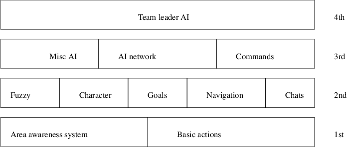

Index
1. Introduction to the Pybot API
- firstly examine the AI in ioquake
- these notes deliberately contain last
weeks and this weeks lectures/tutorial together as they form
a contineous story
- Quake 3 arena box AI is
layered
- much like a network protocol stack
-
decisions made at higher layers are executed through lower
layers
-

2. Layer one
- the input and output layer for the
bot
- area awareness system is the
system which provides the bot with all information about the
world
- much of the information has already been
preprocessed when building the maps
- some of it will be
dynamic
- access to it is fast
- everything the bot
senses goes through the Area Awareness System
AAS
- basic actions are the output
of the bot
- outputs are presented in a
way which is very similar to keyboard/mouse input of a human
player
3. Layer two
- provides the intelligence that is
often subconscious to a skilled human player
- includes AI to select goals using
fuzzy logic
- AI to navigate towards a goal
- AI to
interpret chats
- AI to construct chats
-
functionality to store and retrieve characteristics of bots,
for example
- aim skill
- aim
accuracy
- aggression
- weapon jumping
4. Layer three
- a mixture of production rules
- and an AI network with special nodes
for different situations and states of mind
- very
similar to a state machine
- many if then
else rules
- all higher level thinking
and reasoning takes place in this layer
- it also
contains the command module
- which
allows the bot to understand orders and commands
- from
other players or a team leader
- misc AI module
supports AI for fighting, navigating around obstacles and
solving puzzles
5. Layer four
- one of the bots is designated as
team leader which enables this layer
-
all other bots disable this layer
- typically the
leader might request other bot to follow me
- track enemy, attack enemy etc
6. Introduction to the Pybot API
-

- layered approach
- top
layer, botlib will ultimately be the
interface to user level bots (
python_doommarine.py )
- will
contain both access to basic movement and access to
navigation mechanisms
- maintains the transform between
the doom3 map and penguin tower map
7. botaa
- contains area awareness code for the
python bot
- parses the equivalent pen map and creates
internal simple 2D map of the world in Python
-
implements Dijkstra’s algorithm for routing to pickups
and player/monsters
8. botcache
- provides the same interface as
- botbasic but
it caches all results
- which allows the higher layers (
botaa ) the ability to query the bot
without having to worry about the overhead of the remote
procedure call
- it also contains a method
- reset which
deletes the cache, forcing all future requests to be sent
over to the dhewm3 engine to retrieve up to date values
9. botbasic
- provides socket connection to the
dhewm3 engine
- it also implements the underlying remote
procedure call mechanism
- generally maps onto basic
commands
- such as: move, fire, reload,
turn, aim, etc
10. Example python_doommarine.py code
-
Sandpit/git-doom/pybot-dhewm3/python/python_doommarine.py
doommarine = -2 # default unset value - which will yield an
# error if sent up to the server
if len (sys.argv) > 1:
doommarine = int (sys.argv[1])
#
# much safer when developing to keep bot global to
# ensure a single global bot is created.
#
bot = botlib.bot ("localhost", "python_doommarine %d" % (doommarine))
execBot (False)
Sandpit/git-doom/pybot-dhewm3/python/python_doommarine.py
def botMain ():
global me
print ("success! python doom marine is alive")
printf ("trying to get my id...")
me = bot.me ()
printf ("yes\n")
printf ("the python marine id is: %d\n", me)
circle ()
- notice this code is currently
accessing the botbasic.py layer
directly - as we are testing this layer in isolation
Sandpit/git-doom/pybot-dhewm3/python/python_doommarine.py
def circle ():
while True:
for a in range (0, 360, 45):
runArc (a+180)
time.sleep (5)
Sandpit/git-doom/pybot-dhewm3/python/python_doommarine.py
def walkSquare ():
b.forward (100, 100)
b.select (["move"])
b.left (100, 100)
b.select (["move"])
b.back (100, 100)
b.select (["move"])
b.right (100, 100)
b.select (["move"])
def runArc (a):
b.forward (100, 100)
b.turn (a, 1)
b.select (["move"])
b.select (["turn"])
11. Pybot API
- please read
through the file
Sandpit/git-doom/python/botbasic.py
- and write down a list of all methods
- and alongside each method write a functional synopsis
- forward
- takes two arguments
vel and dist
- vel is the velocity to move
forward
- dist are the number of
doom3 units to move forward (inches)
-
left
- takes two
arguments vel and
dist
-
vel is the velocity to move left
- dist are the number of doom3
units to move left (inches)
-
right
- same
parameters as left but moving right
-
back
- same
parameters as forward but moving backwards
-
stepvec
- three
parameters: velforward ,
velright , and
dist
-
velforward velocity forward,
velright velocity right, and
dist , distance travelled in
inches
12. select
- notice that
the pybot takes time to complete a movement or action
-
how do we know if a movement has completed?
- we can use
the method select which like its
Unix counterpart allows us to block for an event to occur
- select
-
takes a single argument, a list, containing any of:
-
[’move’, ’fire’,
’turn’, ’reload’]
-
indicates which activity it should wait to complete
- it
returns when any specified activity has finished
-
examine the select in
testturn
Sandpit/git-doom/pybot-dhewm3/python/python_doommarine.py
def testturn (a):
b.turn (a, 1)
b.select (["turn"])
without
select we would have to carefully
calibrate calls to sleep
- and hope that the pybot has completed
the activity
13. Conclusion
- we have
examined the bot API in detail
- we will continue to see
how this connects with the dhewm engine next week
- in
particular we will examine the network stack
14. Tutorial
- use emacs to
load the file
$HOME/Sandpit/git-doom3/pybot-dhewm3/python-bot/python_doommarine.py
- remember $HOME
is shorthand for /home/yourusername
- recall that you can use the <tab> key to complete
filename and directory names in emacs
- now press
F12 and when this has completed F5
-
this will compile dhewm3 (F12) and then debug dhewm3 (F5)
- press F10 for help
- make sure that dhewm3 has
been configured to run in a window (not full screen)
- if not reconfigure it and quit dhewm3
and then press F5 in emacs
- open up another
terminal
$ cd
$HOME/Sandpit/chisel/python
$ ./developer-txt2map ../maps/onebot.txt
open up another terminal
$ cd
$HOME/Sandpit/git-doom3/pybot-dhewm3/python-bot
$ python python_doommarine.py 0 this will
run the python bot from the command line and allows you to
see any debugging output return to the dhewm program
and pull down the in game console (using ~) now type:
- dmap tiny.map
- map tiny.map
you
should see Python bot appear and run in a circle
- the game engine is being run under the
debugger
- python bot is being run from the command line
see if you can change
python_doommarine.py to make Python
bot walk around in a circle rather than run create two
functions walkCircle and
runCircle finally change the
program to make Python bot turn without walking
- see if you can change botlib.py so
that an turn angle of 0 degrees is straight up in the
penguin map
you will need to read and study the
file
$HOME/Sandpit/git-doom3/pybot-dhewm3/python-bot/botlib.py
homework, write out a list of functions implemented in
botlib.py together with their
functionality - complete the
walkCircle/runCircle and turn exercises from above
consider what extra basic movements are desirable in
botlib.py open the file
Sandpit/git-doom/python/botbasic.py
in emacs find the method left
- understand what this is doing
now we will trace its functionality to the game engine
find the method right
- write a line by line commentary for
this method
at the top of the file change the
line of code
debug_protocol = False
to
debug_protocol = True
now rerun dhewm3 and rerun
the pybot (consult the earlier slides if necessary) can
you see the call to left ?
- hint look for the word
right in the debugging output on the
gnome terminal
see if you can extend Pybot so
that you can obtain his health, or change weapon, jump,
crouch, etc
15. Screencast of eightbots coming to life
- the video
(eight-bot-screencast)
here does much of the above, but it uses an eight bot map
and also uses mrun to start up the
eight python bots
Index
1. Introduction to the Pybot API
2. Layer one
3. Layer two
4. Layer three
5. Layer four
6. Introduction to the Pybot API
7. botaa
8. botcache
9. botbasic
10. Example python_doommarine.py code
11. Pybot API
12. select
13. Conclusion
14. Tutorial
15. Screencast of eightbots coming to life
Index
This document was
produced using
groff-1.22.